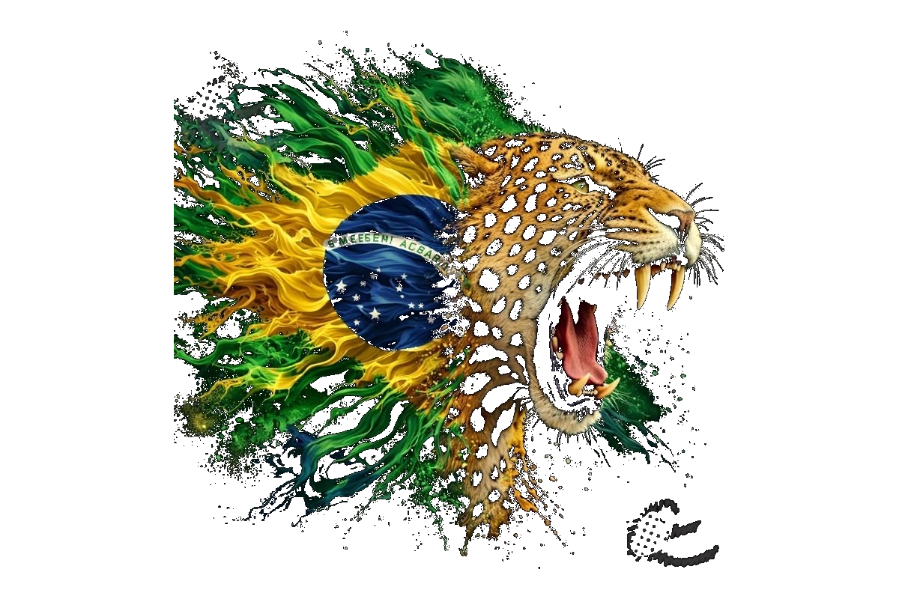
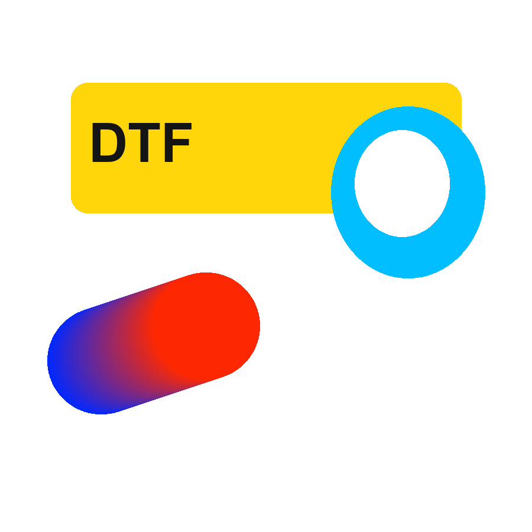

20—45LPI
REDONDOELIPSELOSANGOQUADRADOLINHA
Retículas com intenção.
Escolha de 20 a 45 LPI, ângulo de 0° a 90° e uma das cinco formas de ponto. O valor ajustado é o valor usado pelo motor.
VER O ESTUDO INTERATIVO ↗Prepare suas artes para DTF têxtil.
Controle a retícula, ajuste os tons e escolha
o que fica em cada pixel.
Projeto em desenvolvimento. Edição no aplicativo desktop; este site apresenta exemplos pré-processados.
Uma arte. Diferentes possibilidades.
Compare o original com a retícula e explore os ajustes.

Exemplos pré-processados com o código do repositório. Para trabalhar com seus próprios arquivos, use o aplicativo desktop.
CONHECER A VERSÃO DESKTOPDo primeiro ajuste ao PNG final.
Ferramentas para acompanhar cada etapa da preparação.
Escolha de 20 a 45 LPI, ângulo de 0° a 90° e uma das cinco formas de ponto. O valor ajustado é o valor usado pelo motor.
VER O ESTUDO INTERATIVO ↗
Defina a cor de knockout e o limiar da máscara. Exporte o PNG com transparência binária e os pixels vazios limpos.
ARTE DE TESTE ORIGINAL DO REPOSITÓRIO
WHITE / UNDERBASEPrepare uma base branca opcional com redução de 0, 1 ou 2 pixels. Visualize a camada e ajuste o choke para o seu processo.
ESTUDO EM 30 LPI · PONTO REDONDOOriginal, separação, máscara e comparação. Ajuste tons, levels e limpeza antes de aplicar e exportar o resultado.
INTERFACE EXECUTADA / REVISÃO 865d7cbAbra sua arte, encontre os ajustes
e leve o resultado para o próximo passo.
Abra PNG, JPG ou um projeto salvo no formato .dtx próprio do aplicativo.
↳ PNG / JPG / .DTX PRÓPRIOAjuste retícula, tons, knockout, limpeza e base branca. Compare as visualizações.
↳ VISUALIZE / AJUSTE / APLIQUEGrave o PNG em RGB com alfa binário. A separação preserva as dimensões da imagem de trabalho e o DPI informado. Recorte ou ajuste de tamanho alteram as medidas.
↳ PNG RGB + TRANSPARÊNCIABaixe o aplicativo pronto e abra
com dois cliques no seu Windows.
Executável portátil para Windows de 64 bits, com Python e bibliotecas incluídos. O ZIP inclui o atalho de abertura na raiz. Versão e arquivos da release ↗
Escolha o .exe direto ou o pacote .ZIP. Se escolher o ZIP, extraia os arquivos antes de abrir.
Execute ADNY-DTF-Halftone.exe. Python e dependências já estão no pacote.
O arquivo ABRIR-ADNY.bat abre o aplicativo. Na pasta do código-fonte, ele baixa o .exe no primeiro uso e verifica o arquivo antes de abrir.
Abra a pasta extraída em um terminal com Python disponível.
python -m pip install -r requirements.txtpython -m app.mainSomente para executar o código-fonte: Execute os comandos na pasta que contém requirements.txt e app/. Dependências: PySide6, NumPy, Pillow e OpenCV.
Este site apresenta o aplicativo desktop. Os estudos interativos exibem imagens pré-processadas pelo motor do repositório. Para abrir, editar e exportar seus próprios arquivos, use o executável Windows ou execute o projeto Python no computador.
A frequência de 20 a 45 LPI, o ângulo de 0° a 90° e as formas redondo, elipse, losango, quadrado e linha. A demonstração desta página mostra estudos com 20, 30 e 45 LPI em três dessas formas.
A separação não redimensiona automaticamente a imagem de trabalho. Os comandos de tamanho e recorte mudam suas dimensões em pixels. O DPI informado é mantido. Sem essa informação, o editor usa 300 DPI internamente para os cálculos, mas exporta sem gravar esse valor como DPI do arquivo.
O foco do projeto é DTF têxtil para camisetas. A saída é um PNG em RGB com transparência; a conversão de cor para a impressão fica a cargo do RIP. DTF UV está fora do escopo do aplicativo.
O aplicativo usa seu próprio formato de projeto .dtx para guardar a imagem e os ajustes. Ele não é compatível com arquivos .dtx proprietários de outros aplicativos.
O repositório registra testes digitais, mas não comprova uma prova física da estampa. O projeto está em desenvolvimento. Confira a saída no seu RIP e faça uma prova no seu processo antes da produção.